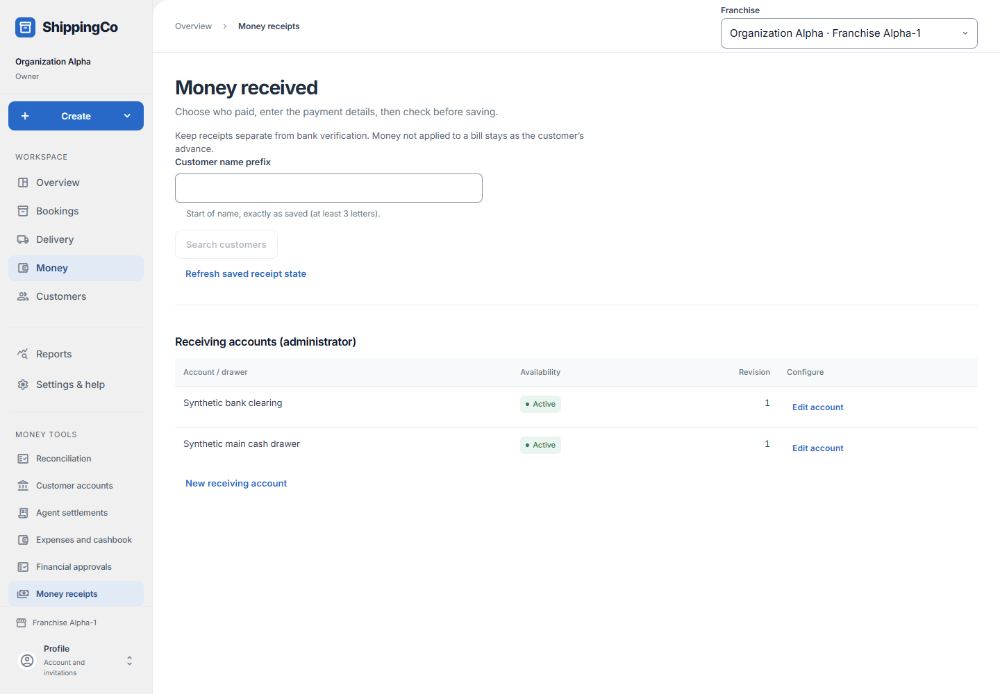

Money received
What this helps you do
- Record customer money actually received and apply it to the right bills.
Open this feature
- Money > Money receipts.
- Check the active branch first. Available actions depend on your role and the selected record.

Find the payer and review payment
- Search using at least three customer-name characters, select the correct payer and inspect existing receipts before adding another payment. Receipt reference opens a known saved receipt.
- Enter the actual positive Amount received in rupees. Choose Receiving account / cash drawer first, then an allowed Receipt method. Enter the actual received time in Kolkata and initial receiver/custodian. The private external reference is optional.
- Choose the payment context and enter amounts against the intended bookings. Allocations cannot exceed the receipt total. Unallocated money remains customer advance.
- Confirm I confirm this money was actually collected. Select Review payment, check payer, amount, method and allocations, then Confirm money received. Check the saved receipt before recording another payment.
Advance and corrections
- Apply existing advance to the correct bills without recording a second receipt.
- An administrator can choose Original allocation, Release amount and Correction reason, then Release allocation (admin). Money returns to advance; this does not refund it.
- Unused advance returns have a separate request, independent approval and actual-return workflow on the receipt.
Administrator receiving accounts
- Select New receiving account. Enter Account / drawer name, allowed methods and Active for new receipts. Cash drawers use cash only; Other requires Named other method.
- Save receiving account and check its revision. Edit account revises the saved configuration.
Fields and when to use them
These fields belong to the actions above. Complete the fields for your selected action; optional filters may stay blank.
- Customer name prefix: The first part of the existing customer name. Enter at least three characters to search. Use when shown for the selected action.
- Receipt reference: Use the reference from the matching saved record or real supporting document. Do not invent one. Use when shown for the selected action.
- Amount received (₹): Enter the actual amount in rupees. Use no more than two decimal places. Required when this field is shown.
- Receiving account / cash drawer: Select the receiving account / cash drawer involved in this action; check its account and responsible person. Use when shown for the selected action.
- Receipt method: Choose how the money was paid or checked. Use the option that actually applies. Use when shown for the selected action.
- Money received at (Asia/Kolkata): Enter when the event really happened. Use the time zone named in the label. Use when shown for the selected action.
- Receiver / initial custodian: The staff member who first received and held the money. Use when shown for the selected action.
- Private external reference (optional): Use the reference from the matching saved record or real supporting document. Do not invent one. Optional
- Payment context: The payment context for the bill allocation; selecting it does not itself record money. Use when shown for the selected action.
- Original allocation: Select the original allocation involved in this action; check its account and responsible person. Use when shown for the selected action.
- Release amount (₹): Enter the actual amount in rupees. Use no more than two decimal places. Use when shown for the selected action.
- Correction reason: Explain why you are making this request or change. Use the real business reason. Use when shown for the selected action.
- Account / drawer name: Select the account / drawer name involved in this action; check its account and responsible person. Required when this field is shown.
- Named other method: Choose how the money was paid or checked. Use the option that actually applies. Required when this field is shown.
- Apply to booking: How much of this receipt pays each selected bill. The total cannot exceed money received. Optional; unused money stays as advance
- I confirm this money was actually collected: Select only after the money has been received. Required to record the receipt
- Allowed methods / Active for new receipts: Choose the supported payment methods and whether staff can use this receiving account. Cash uses its own drawer. Administrator account setup
If you need to retry
- No records: check branch, account or customer and filters. Use Load more where offered before deciding a record is missing.
- Invalid or missing value: read the form message, correct the draft, then review amounts and references again.
- Uncertain save: use the offered retry for the same request. Do not create a second payment, return, expense or application to guess whether the first saved.
- Changed evidence or policy: refresh current records and review them before a new request. A saved report retains its captured figures; create another report for current results.
About this guide
Checked against the current screen code on 1 November 2026. This explains app behaviour, not tax or accounting advice. Buttons and records can differ by role.